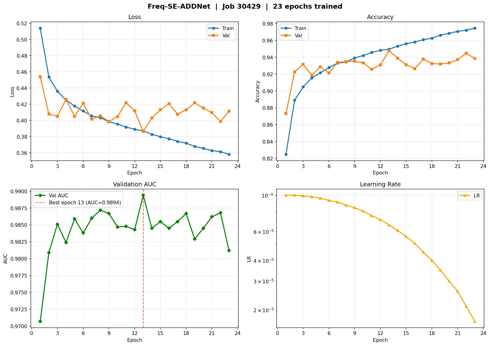
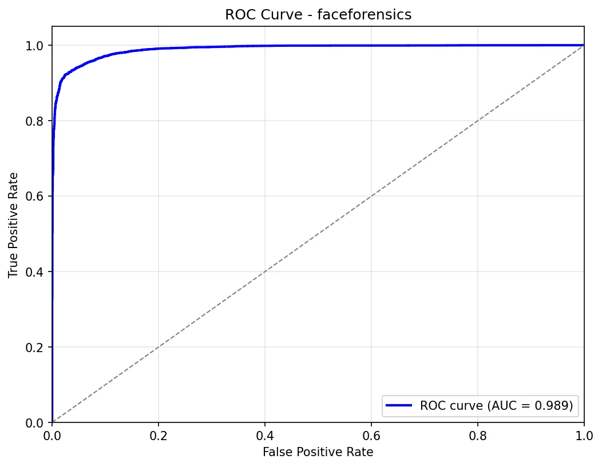
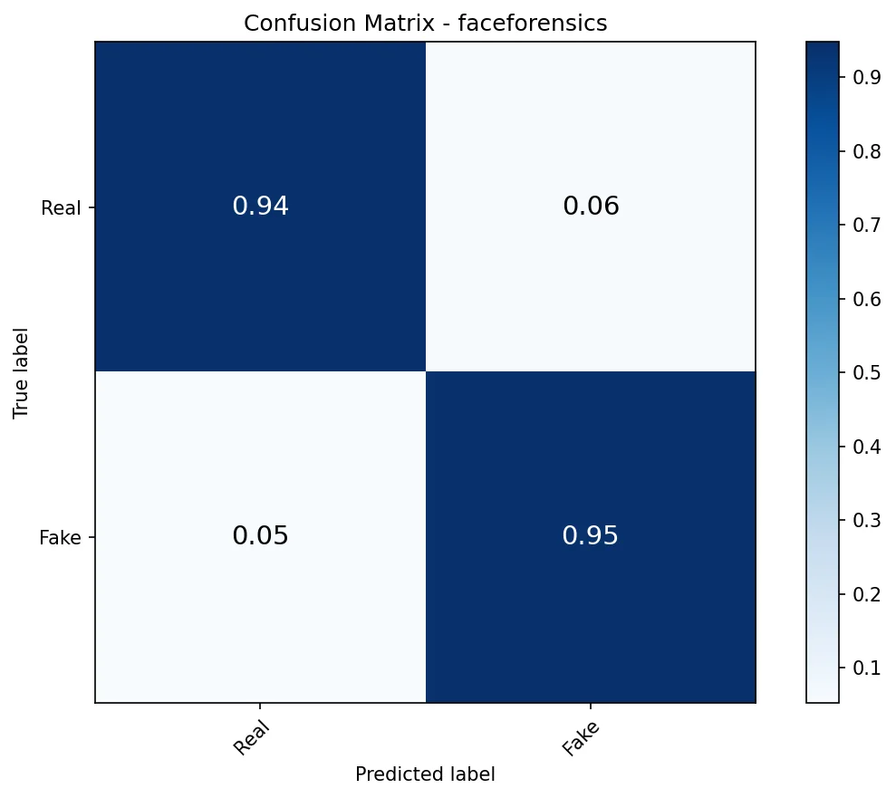

Computer vision · Deep learning · Feb – Apr 2026
Deepfake ForensicsFrequency-aware SE-ADDNet
- Problem
- Faces can now be faked by inpainting, identity swaps or text-to-image models. A detector has to catch all of them — and a bare REAL/FAKE label gives a reviewer nothing to check.
- Solution
- A dual-stream network. A spatial stream (EfficientNet-B5 with SE channel attention and ADD spatial attention) reads manipulation cues in pixels; a frequency stream runs the image’s FFT magnitude spectrum through a small CNN. A learnable, sigmoid-gated FrequencyGate fuses the two before classification, and Grad-CAM shows which regions drove the call.
- What I built
- The full pipeline: model, focal loss (γ = 2) with weighted sampling for the roughly 3:1 fake-to-real imbalance, FP16 mixed-precision training with cosine schedule and early stopping on validation AUC, evaluation scripts, CLI inference that emits a JSON report, and a Streamlit app serving Grad-CAM localisation.
- Decisions
- Focal loss and weighted sampling instead of plain cross-entropy, because fakes outnumber reals about 3:1. Early stopping on validation AUC rather than loss: the run keeps the epoch-13 checkpoint (of 23), after validation loss had flattened while training loss kept falling.
- Reading the results
- The test split is 9,000 fakes and 3,000 reals, so a model that says “fake” every time would already score 75% accuracy. That is why specificity (94.2%), EER (5.46%) and AUC are shown beside accuracy. The model misses 473 of 9,000 fakes and flags 175 of 3,000 real faces.
- Limits
- Results come from one benchmark (DeepFakeFace, an ~80/10/10 split of ~120K images). No cross-dataset evaluation is reported, so read the numbers as in-distribution. Validation accuracy plateaus around 93–95% while training accuracy keeps climbing, a mild overfit.
Evidence from the repository



Technical details
- Dataset
- OpenRL/DeepFakeFace, ~120K images: real faces from the “wiki” subset, fakes from inpainting, InsightFace swaps and a text-to-image generator. 80/10/10 split, seed 42.
- Input
- 256 × 256 face crops. The frequency stream takes the FFT magnitude spectrum of the same image.
- Training
- AdamW, lr 1e-4, weight decay 0.05; cosine schedule with 3 warm-up epochs; batch size 16; FP16 mixed precision; focal loss γ = 2; early-stopping patience 10. 23 epochs were run.
- Test metrics
- 12,000 images. Accuracy 94.6% · F1 96.34% · AUC 98.95% · precision 97.99% · recall 94.74% · specificity 94.17% · EER 5.46% · average precision 99.65%.
- Serving
- CLI inference that writes a JSON report; Streamlit app that overlays Grad-CAM on the face.